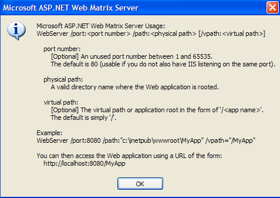
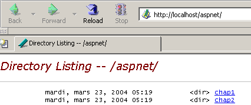
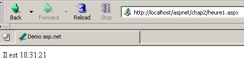

3. Introdução ao Desenvolvimento Web em ASP.NET
3.1. Introdução
O capítulo anterior apresentou os princípios do desenvolvimento web, que são independentes da linguagem de programação utilizada. Atualmente, três tecnologias dominam o mercado de desenvolvimento web:
- J2EE, que é uma plataforma de desenvolvimento Java. Combinada com a tecnologia Struts, instalada em vários servidores de aplicações, a plataforma J2EE é utilizada principalmente em projetos de grande escala. Devido à linguagem utilizada — Java —, uma aplicação J2EE pode ser executada nos principais sistemas operativos (Windows, Unix, Linux, Mac OS, etc.)
- PHP, que é uma linguagem interpretada e também independente do sistema operativo. Ao contrário do Java, não é uma linguagem orientada para objetos. No entanto, espera-se que a versão PHP5 introduza funcionalidades orientadas para objetos na linguagem. Fácil de utilizar, o PHP é amplamente utilizado em projetos de pequena e média dimensão.
- O ASP.NET é uma tecnologia que funciona apenas em máquinas Windows equipadas com a plataforma .NET (XP, 2000, 2003, etc.). A linguagem de desenvolvimento utilizada pode ser qualquer linguagem compatível com .NET, ou seja, mais de uma dúzia, começando pelas linguagens da Microsoft (C#, VB.NET, J#), Delphi da Borland, Perl, Python, ...
O capítulo anterior apresentou breves exemplos para cada uma destas três tecnologias. Este documento centra-se no desenvolvimento web ASP.NET utilizando a linguagem VB.NET. Partimos do princípio de que está familiarizado com esta linguagem. Este ponto é importante. Aqui, estamos interessados exclusivamente na sua utilização no contexto do desenvolvimento web. Vamos aprofundar este ponto discutindo a metodologia MVC para o desenvolvimento web.
Uma aplicação web que segue o modelo MVC será estruturada da seguinte forma:

Essa arquitetura, conhecida como arquitetura de 3 camadas ou 3 níveis, visa aderir ao modelo MVC (Model-View-Controller):
- a interface do utilizador é o V (a vista)
- a lógica da aplicação é o C (o controlador)
- as fontes de dados são o M (Modelo)
A interface do utilizador é frequentemente um navegador web, mas também pode ser uma aplicação autónoma que envia pedidos HTTP para o serviço web através da rede e formata os resultados que recebe. A lógica da aplicação consiste em scripts que processam os pedidos do utilizador. A fonte de dados é frequentemente uma base de dados, mas também pode ser simples ficheiros planos, um diretório LDAP, um serviço web remoto, etc. É do interesse do programador manter um elevado grau de independência entre estas três entidades, de modo a que, se uma delas mudar, as outras duas não tenham de mudar, ou apenas minimamente.
- A lógica de negócio da aplicação será colocada em classes separadas da classe que controla o diálogo de pedido-resposta. Assim, o bloco [Lógica de Aplicação] acima poderia consistir nos seguintes elementos:

Dentro do bloco [Lógica da Aplicação], podemos distinguir
- a classe controladora, que serve como ponto de entrada da aplicação.
- o bloco [Classes de Negócio], que agrupa as classes necessárias para a lógica da aplicação. Estas são independentes do cliente.
- o bloco [Classes de Acesso a Dados], que agrupa as classes necessárias para recuperar os dados exigidos pelo servlet, frequentemente dados persistentes (base de dados, ficheiros, serviço web, etc.)
- o bloco de páginas ASP que constituem as vistas da aplicação.
Em casos simples, a lógica da aplicação é frequentemente reduzida a duas classes:
- a classe controladora que lida com a comunicação cliente-servidor: processando a solicitação e gerando várias respostas
- a classe de negócio que recebe os dados a serem processados do controlador e devolve os resultados ao mesmo. Esta classe de negócio gere então ela própria o acesso aos dados persistentes.
O aspeto único do desenvolvimento web reside na escrita da classe controladora e das páginas de apresentação. As classes de negócios e de acesso a dados são classes .NET padrão que podem ser utilizadas numa aplicação web, bem como numa aplicação Windows ou mesmo numa aplicação de consola. Escrever estas classes requer uma compreensão sólida da programação orientada a objetos. Neste documento, elas serão escritas em VB.NET, pelo que assumimos que é proficiente nesta linguagem. Nesta perspetiva, não há necessidade de nos determos no código de acesso aos dados mais do que o necessário. Em quase todos os livros sobre ASP.NET, há um capítulo dedicado ao ADO.NET. O diagrama acima mostra que o acesso aos dados é tratado por classes .NET padrão que não têm consciência de que estão a ser utilizadas num contexto web. O controlador, que atua como o líder da equipa da aplicação web, não precisa de se preocupar com o ADO.NET. Ele precisa apenas de saber a que classe solicitar os dados necessários e como solicitá-los. É tudo. Colocar código ADO.NET no controlador viola o conceito MVC explicado acima, e não o faremos.
3.2. Ferramentas
Este documento destina-se a estudantes, pelo que iremos trabalhar com ferramentas gratuitas disponíveis para download na Internet:
- a plataforma .NET (compiladores, documentação)
- o ambiente de desenvolvimento WebMatrix, que inclui o servidor web Cassini
- vários SGBDs (MSDE, MySQL)
Recomenda-se aos leitores que consultem o apêndice «Ferramentas Web», que explica onde encontrar e como instalar estas várias ferramentas. Na maioria das vezes, precisaremos apenas de três ferramentas:
- um editor de texto para escrever aplicações web.
- uma ferramenta de desenvolvimento VB.NET para escrever código VB quando for necessário. Este tipo de ferramenta geralmente oferece assistência na introdução de código (autocompletar) e deteção de erros de sintaxe, quer enquanto escreve o código, quer durante a compilação.
- um servidor web para testar as aplicações web que escreveu. Neste documento, utilizaremos o Cassini. Os leitores que possuam um servidor IIS podem substituir o Cassini pelo IIS. Ambos são compatíveis com .NET. No entanto, o Cassini está limitado a responder apenas a pedidos locais (localhost), enquanto o IIS pode responder a pedidos provenientes de máquinas externas.
Um excelente ambiente comercial para desenvolvimento em VB.NET é o Visual Studio.NET da Microsoft. Este IDE rico em funcionalidades permite-lhe gerir todos os tipos de documentos (código VB.NET, documentos HTML, XML, folhas de estilo, etc.). Para escrever código, fornece a inestimável assistência da «autocompletar» de código. Dito isto, esta ferramenta, que melhora significativamente a produtividade do programador, tem uma desvantagem: limita o programador a um modo de desenvolvimento padrão que é certamente eficiente, mas nem sempre apropriado.
É possível utilizar o servidor Cassini fora do [WebMatrix], e é isso que faremos frequentemente. O executável do servidor encontra-se em <WebMatrix>\<versão>\WebServer.exe, onde <WebMatrix> é o diretório de instalação do [WebMatrix] e <versão> é o seu número de versão:

Vamos abrir uma janela do Prompt de Comando e navegar até à pasta do servidor Cassini:
E:\Program Files\Microsoft ASP.NET Web Matrix\v0.6.812>dir
...
29/05/2003 11:00 53 248 WebServer.exe
...
Vamos executar o [WebServer.exe] sem quaisquer parâmetros:

O painel acima mostra que a aplicação [WebServer/Cassini] aceita três parâmetros:
- /port: número da porta do serviço web. Pode ser qualquer número. O valor padrão é 80
- /path: caminho físico para uma pasta no disco
- /vpath: pasta virtual associada à pasta física anterior.
Colocaremos os nossos exemplos numa árvore de ficheiros com o diretório raiz P e as pastas chap1, chap2, ... para os diferentes capítulos deste documento. Associaremos o caminho virtual V a esta pasta física P. Também iniciaremos o Cassini com o seguinte comando DOS:
Por exemplo, se quisermos que a raiz física do servidor seja a pasta [D:\data\devel\aspnet\poly] e a sua raiz virtual seja [aspnet], o comando DOS para iniciar o servidor web será:
Pode guardar este comando como um atalho. Uma vez iniciado, o Cassini coloca um ícone na barra de tarefas. Ao clicar duas vezes nele, abre-se um painel de Iniciar/Parar do servidor:

O painel exibe os três parâmetros utilizados para o iniciar. Oferece dois botões de iniciar/parar, bem como um link de teste para a raiz da sua árvore de diretórios web. Clicamos nele. Um navegador abre-se e o URL [http://localhost/aspnet] é solicitado. Vemos o conteúdo da pasta especificada no campo [Physical Path] acima:

Neste exemplo, o URL solicitado corresponde a uma pasta em vez de um documento web, pelo que o servidor apresentou o conteúdo dessa pasta em vez de um documento web específico. Se existir um ficheiro denominado [default.aspx] nesta pasta, este será apresentado. Por exemplo, vamos criar o seguinte ficheiro e colocá-lo na raiz da árvore web do Cassini (d:\data\devel\aspnet\poly neste caso):
Agora vamos solicitar a URL [http://localhost/aspnet] utilizando um navegador:

Vemos que, na realidade, foi exibida a URL [http://localhost/aspnet/default.aspx]. Mais adiante neste documento, explicaremos como o Cassini deve ser configurado utilizando a notação Cassini(path,vpath), em que [path] é o nome da pasta raiz da árvore de diretórios web do servidor e [vpath] é o caminho virtual associado. Lembre-se de que, com o servidor Cassini(path,vpath), a URL [http://localhost/vpath/XX] corresponde ao caminho físico [path\XX]. Colocaremos todos os nossos documentos num diretório raiz físico que chamaremos de <webroot>. Assim, podemos referir-nos ao ficheiro <webroot>\chap2\here1.aspx. Para cada leitor, este diretório <webroot> será uma pasta na sua máquina pessoal. Aqui, as capturas de ecrã mostrarão que esta pasta é frequentemente [d:\data\devel\aspnet\poly]. No entanto, nem sempre será este o caso, uma vez que os testes foram realizados em máquinas diferentes.
3.3. Primeiros exemplos
Apresentaremos alguns exemplos simples de páginas web dinâmicas criadas com VB.NET. Os leitores são encorajados a testá-los para verificar se o seu ambiente de desenvolvimento está devidamente instalado. Veremos que existem várias formas de criar uma página ASP.NET. Escolheremos uma para o resto do nosso trabalho de desenvolvimento.
3.3.1. Exemplo básico - Variante 1
Ferramentas necessárias: um editor de texto, o servidor web Cassini
Vamos revisitar o exemplo do capítulo anterior. Vamos criar o seguinte ficheiro [heure1.aspx]:
<html>
<head>
<title>Demo asp.net </title>
</head>
<body>
Il est <% =Date.Now.ToString("T") %>
</body>
</html>
Este código é código HTML com uma tag especial <% ... %>. Dentro desta tag, pode colocar código VB.NET. Aqui, o código
gera uma cadeia de caracteres C que representa a hora atual. A tag <% ... %> é então substituída por esta cadeia de caracteres C. Portanto, se C for a cadeia de caracteres 18:11:01, a linha HTML que contém o código VB.NET torna-se:
Vamos colocar o código anterior no ficheiro [<webroot>\chap2\heure1.aspx]. Vamos iniciar o Cassini(<webroot>,/aspnet) e solicitar o URL [http://localhost/aspnet/chap2/heure1.aspx] num navegador:

Assim que obtivermos este resultado, sabemos que o ambiente de desenvolvimento está corretamente instalado. A página [heure1.aspx] foi compilada, uma vez que contém código VB.NET. A sua compilação produziu um ficheiro DLL que foi armazenado numa pasta do sistema e, em seguida, executado pelo servidor Cassini.
3.3.2. Exemplo básico - variante 2
Ferramentas necessárias: um editor de texto, o servidor web Cassini
O documento [heure1.aspx] mistura código HTML e código VB.NET. Num exemplo tão simples, isto não constitui um problema. Se precisar de incluir mais código VB.NET, convém separar o código HTML do código VB de forma mais clara. Isto pode ser feito colocando o código VB dentro de uma tag <script>:
<script runat="server">
' calcul des données à afficher par le code HTML
...
</script>
<html>
....
' affichage des valeurs calculées par la partie script
</html>
O exemplo [heure2.aspx] demonstra este método:
<script runat="server">
Dim maintenant as String=Date.Now.ToString("T")
</script>
<html>
<head>
<title>Demo asp.net </title>
</head>
<body>
Il est
<% =maintenant %>
</body>
</html>
Colocamos o documento [heure2.aspx] na árvore de diretórios [<webroot>\chap2\heure2.aspx] no servidor web Cassini (<webroot>,/aspnet) e solicitamos o documento utilizando um navegador:

3.3.3. Exemplo básico - Variante 3
Ferramentas necessárias: um editor de texto, o servidor web Cassini
Levamos a separação do código VB e do código HTML um passo mais além, colocando-os em dois ficheiros separados. O código HTML estará no ficheiro [heure3.aspx] e o código VB em [heure3.aspx.vb]. O conteúdo de [heure3.aspx] será o seguinte:
<%@ Page Language="vb" src="heure3.aspx.vb" Inherits="heure3" %>
<html>
<head>
<title>Demo asp.net</title>
</head>
<body>
Il est
<% =maintenant %>
</body>
</html>
Existem duas diferenças fundamentais:
- a diretiva [Page] com atributos que ainda não estão definidos
- a utilização da variável [now] no código HTML, apesar de não estar inicializada em lado nenhum
A diretiva [Page] é utilizada aqui para indicar que o código VB que irá inicializar a página se encontra noutro ficheiro. O atributo [src] especifica este ficheiro. Veremos que o código VB pertence a uma classe chamada [heure3]. De forma transparente para o programador, um ficheiro .aspx é convertido numa classe que deriva de uma classe base chamada [Page]. Aqui, o nosso documento HTML deve derivar da classe que define e calcula os dados que precisa de apresentar. Neste caso, é a classe [heure3] definida no ficheiro [heure3.aspx.vb]. Devemos, portanto, especificar esta relação pai-filho entre o documento VB [heure3.aspx.vb] e o documento HTML [heure3.aspx]. O atributo [inherits] especifica esta relação. Deve indicar o nome da classe definida no ficheiro apontado pelo atributo [src].
Vamos agora examinar o código VB da página:
Public Class heure3
Inherits System.Web.UI.Page
' data of the web page to be displayed
Protected maintenant As String
Private Sub Page_Load(ByVal sender As System.Object, ByVal e As System.EventArgs) Handles MyBase.Load
'calculates the web page data
maintenant = Date.Now.ToString("T")
End Sub
End Class
Tenha em atenção os seguintes pontos:
- O código VB define uma classe [heure3] derivada da classe [System.Web.UI.Page]. Isto é sempre o caso, uma vez que uma página web deve sempre ser derivada de [System.Web.UI.Page].
- A classe declara um atributo protegido [now]. Sabemos que um atributo protegido é diretamente acessível nas classes derivadas. É isto que permite ao documento HTML [heure3.aspx] aceder ao valor dos dados [now] no seu código.
- O atributo [maintenant] é inicializado num procedimento [Page_Load]. Veremos mais tarde que um objeto [Page] é notificado pelo servidor web sobre uma série de eventos. O evento [Load] ocorre quando o objeto [Page] e os seus componentes foram criados. O manipulador para este evento é designado pela diretiva [Handles MyBase.Load]
- O nome [XX] do manipulador de eventos pode ser qualquer coisa. A sua assinatura deve ser a apresentada acima. Não iremos explicar isto em detalhe por agora.
- Utilizamos frequentemente o manipulador de eventos [Page.Load] para calcular os valores dos dados dinâmicos que a página web deve apresentar.
Os ficheiros [heure3.spx] e [heure3.aspx.vb] estão localizados em [<webroot>\chap2]. Em seguida, utilizando um navegador, solicitamos o URL [http://localhost/aspnet/chap2/heure3.aspx] ao servidor web (<webroot>,/aspnet):

3.3.4. Exemplo básico - Variante 4
Ferramentas necessárias: um editor de texto, o servidor web Cassini
Utilizamos o mesmo exemplo de antes, mas consolidamos todo o código num único ficheiro [heure4.aspx]:
<script runat="server">
' data of the web page to be displayed
Private maintenant As String
' evt page_load
Private Sub Page_Load(ByVal sender As System.Object, ByVal e As System.EventArgs) Handles MyBase.Load
'calculates the web page data
maintenant = Date.Now.ToString("T")
End Sub
</script>
<html>
<head>
<title>Demo asp.net</title>
</head>
<body>
Il est
<% =maintenant %>
</body>
</html>
Vemos a mesma sequência que no Exemplo 2:
Desta vez, o código VB foi organizado em procedimentos. Vemos o procedimento [Page_Load] do exemplo anterior. O objetivo aqui é demonstrar que uma página .aspx independente (não ligada a código VB num ficheiro separado) é implicitamente convertida numa classe derivada de [Page]. Portanto, podemos utilizar os atributos, métodos e eventos desta classe. É isso que se faz aqui, onde utilizamos o evento [Load] desta classe.
O método de teste é idêntico aos anteriores:

3.3.5. Exemplo Básico - Variante 5
Ferramentas necessárias: um editor de texto, o servidor web Cassini
Tal como no Exemplo 3, separamos o código VB e o código HTML em dois ficheiros distintos. O código VB é colocado em [heure5.aspx.vb]:
Public Class heure5
Inherits System.Web.UI.Page
' data of the web page to be displayed
Protected maintenant As String
Private Sub Page_Load(ByVal sender As System.Object, ByVal e As System.EventArgs) Handles MyBase.Load
'calculates the web page data
maintenant = Date.Now.ToString("T")
End Sub
End Class
O código HTML é colocado em [heure5.aspx]:
<%@ Page Inherits="heure5" %>
<html>
<head>
<title>Demo asp.net</title>
</head>
<body>
Il est
<% =maintenant %>
</body>
</html>
Desta vez, a diretiva [Page] já não especifica a ligação entre o código HTML e o código VB. O servidor web já não consegue localizar o código VB para o compilar (falta o atributo src). Cabe-nos a nós realizar esta compilação. Numa janela do DOS, compilamos, portanto, a classe VB [heure5.aspx.vb]:
dos>dir
23/03/2004 18:34 133 heure1.aspx
24/03/2004 09:47 232 heure2.aspx
24/03/2004 10:16 183 heure3.aspx
24/03/2004 10:16 332 heure3.aspx.vb
24/03/2004 14:31 440 heure4.aspx
24/03/2004 14:45 332 heure5.aspx.vb
24/03/2004 14:56 148 heure5.aspx
dos>vbc /r:system.dll /r:system.web.dll /t:library /out:heure5.dll heure5.aspx.vb
Compilateur Microsoft (R) Visual Basic .NET version 7.10.3052.4
No exemplo acima, o executável do compilador [vbc.exe] estava no PATH da máquina DOS. Se não estivesse, teria de especificar o caminho completo para [vbc.exe], que se encontra na árvore de diretórios onde o .NET SDK foi instalado. As classes derivadas de [Page] requerem recursos presentes nas DLLs [system.dll, system.web.dll], daí a referência a elas através da opção /r do compilador. A opção /t:library é utilizada para indicar que pretendemos gerar uma DLL. A opção /out especifica o nome do ficheiro a ser gerado, neste caso [heure5.dll]. Este ficheiro contém a classe [heure5] necessária ao documento web [heure5.aspx]. No entanto, o servidor web procura as DLLs de que necessita em locais específicos. Um desses locais é a pasta [bin] localizada na raiz da sua árvore de diretórios. Esta raiz é o que designámos por <webroot>. Para o servidor IIS, trata-se geralmente de <drive>:\inetpub\wwwroot, onde <drive> é a unidade (C, D, ...) onde o IIS foi instalado. Para o servidor Cassini, esta raiz corresponde ao parâmetro /path utilizado quando o iniciou. Lembre-se de que este valor pode ser obtido clicando duas vezes no ícone do servidor na barra de tarefas:

<webroot> corresponde ao atributo [Physical Path] acima. Criamos, portanto, uma pasta <webroot>\bin e colocamos [heure5.dll] dentro dela:

Estamos prontos. Solicitamos o URL [http://localhost/aspnet/chap2/heure5.aspx] ao servidor Cassini (<webroot>,/aspnet):

3.3.6. Exemplo básico - Variante 6
Ferramentas necessárias: um editor de texto, o servidor web Cassini
Mostrámos até agora que uma aplicação web dinâmica tem dois componentes:
- Código VB para calcular as partes dinâmicas da página
- Código HTML, que por vezes inclui código VB para apresentar esses valores na página. Esta parte representa a resposta enviada ao cliente web.
O componente 1 é chamado de componente controlador de página, e o componente 2 é o componente de apresentação. O componente de apresentação deve conter o mínimo possível de código VB, ou mesmo nenhum código VB. Veremos que isso é possível. Aqui, mostramos um exemplo em que existe apenas um controlador e nenhum componente de apresentação. É o próprio controlador que gera a resposta para o cliente sem a ajuda do componente de apresentação.
O código de apresentação fica assim:
Podemos ver que já não existe qualquer código HTML no interior. A resposta é gerada diretamente no controlador:
Public Class heure6
Inherits System.Web.UI.Page
Private Sub Page_Load(ByVal sender As System.Object, ByVal e As System.EventArgs) Handles MyBase.Load
' we work out the answer
Dim HTML As String
HTML = "<html><head><title>heure6</title></head><body>Il est "
HTML += Date.Now.ToString("T")
HTML += "</body></html>"
' we send it
Response.Write(HTML)
End Sub
End Class
Aqui, o controlador constrói a resposta completa, em vez de apenas as suas partes dinâmicas. Também a envia. Faz isso utilizando a propriedade [Response] do tipo [HttpResponse] na classe [Page]. Este objeto representa a resposta do servidor ao cliente. A classe [HttpResponse] possui um método [Write] para escrever no fluxo HTML que será enviado ao cliente. Aqui, armazenamos todo o fluxo HTML a ser enviado na variável [HTML] e enviamo-lo ao cliente utilizando [Response.Write(HTML)].
Solicitamos a URL [http://localhost/aspnet/chap2/heure6.aspx] ao servidor Cassini (<webroot>,/aspnet):

3.3.7. Conclusão
A seguir, utilizaremos o Método 3, que coloca o código VB e o código HTML de um documento web dinâmico em dois ficheiros separados. Este método tem a vantagem de dividir uma página web em dois componentes:
- um componente controlador composto exclusivamente por código VB para calcular as partes dinâmicas da página
- um componente de apresentação, que é a resposta enviada ao cliente. Consiste em código HTML que pode incluir código VB para exibir valores dinâmicos. O nosso objetivo será sempre ter o mínimo possível de código VB no componente de apresentação; idealmente, nenhum.
Conforme mostrado no Método 5, o controlador pode ser compilado independentemente da aplicação web. Isto tem a vantagem de permitir que se concentre exclusivamente no código e receba uma lista de todos os erros a cada compilação. Assim que o controlador for compilado, a aplicação web pode ser testada. Sem compilação prévia, o servidor web tratará disso, e os erros serão reportados um a um. Isto pode ser considerado tedioso.
Para os exemplos que se seguem, as seguintes ferramentas são suficientes:
- um editor de texto para criar os documentos HTML e VB da aplicação, quando estes forem simples
- um IDE de desenvolvimento .NET para criar classes VB.NET, a fim de beneficiar da assistência que este tipo de ferramenta proporciona ao escrever código. Um exemplo de tal ferramenta é o CSharpDevelop (http://www.icsharpcode.net). Um exemplo da sua utilização é apresentado no apêndice [Ferramentas de Desenvolvimento Web].
- a ferramenta WebMatrix para criar as páginas de apresentação da aplicação (ver o apêndice [Ferramentas de Desenvolvimento Web]).
- O servidor Cassini
Todas estas ferramentas são gratuitas.